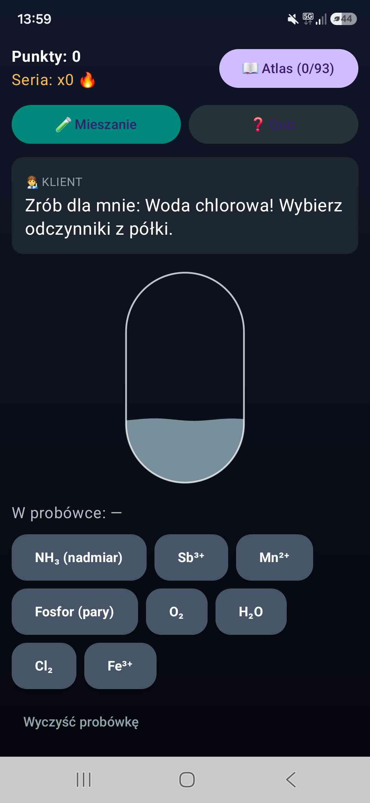
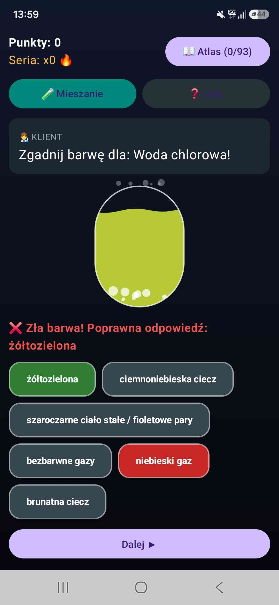
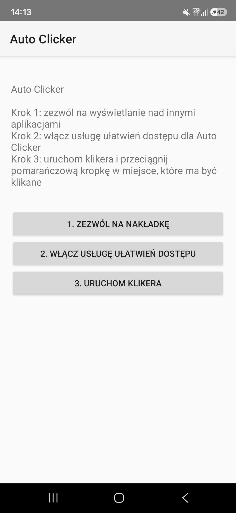
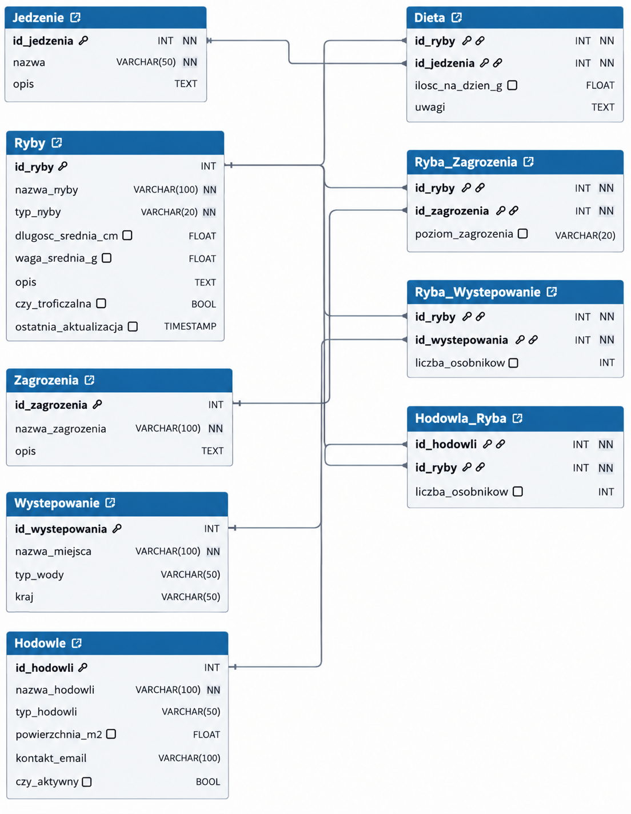

ChemLab
Aplikacja stworzona na zlecenie, która pomaga maturzystom w przystępny sposób opanować związki chemiczne i ich charakterystyczne barwy.
Pobierz .apkJestem uczennicą technikum komunikacji im. Hipolita Cegielskiego z oddziałami dwujęzycznymi w Poznaniu na profilu technik programista.
Programowaniem interesuję się już od szkoły podstawowej, a obecnie rozszerzam swoją wiedzę w technikum. Najbardziej lubię tworzenie projektów, którymi mogę dzielić się z innymi i które dostarczają użytkownikom mnóstwo świetnej zabawy. Aktualnie skupiam się na rozwijaniu swoich umiejętności i poznawaniu nowych technologii, aby moje kolejne aplikacje były jeszcze bardziej dopracowane i angażujące.
Rzeczy, które zrobiłam sama. Przy każdej jest film albo plik do wypróbowania.


Aplikacja stworzona na zlecenie, która pomaga maturzystom w przystępny sposób opanować związki chemiczne i ich charakterystyczne barwy.
Pobierz .apk
Aplikacja AutoClicker stworzona, ponieważ każdy dostępny clicker był pełen reklam lub płatny.
Pobierz .apk
Relacyjna baza danych MySQL przeznaczona do zarządzania ekosystemem wodnym i hodowlami ryb, zawierająca automatycznie wygenerowane skryptami w Pythonie dane testowe. System wspiera integralność danych za pomocą procedur, w tym funkcji obliczających limity pojemności oraz triggerów automatyzujących walidację i generowanie adresów e-mail.
Dwuwymiarowa platformówka, w której ryba o imieniu Felek skacze po wiszących w powietrzu platformach. Celem gracza jest zbieranie truskawek oraz unikanie kolców, aby zdobywać punkty.
Interaktywna aplikacja w formie organizerowo-rozrywkowej, która umożliwia użytkownikom logowanie, zarządzanie zadaniami za pomocą kalendarza miesięcznego i list oraz interakcję z wirtualnym zwierzakiem. Całość została zaprojektowana w sposób obiektowy, dzieląc funkcjonalności na przejrzyste moduły z zachowaniem spójnego interfejsu graficznego.
Gra jest trójwymiarowym labiryntem stworzonym w technologii OpenGL, w którym struktura korytarzy generowana jest automatycznie z pliku tekstowego zawierającego zera i jedynki. Zadaniem gracza jest nawigacja z perspektywy pierwszej osoby przez tak utworzoną sieć ścieżek aż do odnalezienia wyjścia.
Co robię, kiedy nie koduję.
Gdy mam wolniejszy czas i chęci, zajmuję się rysowaniem cyfrowym oraz animacją. Pracuję na tablecie graficznym Huion, a mój ulubiony program to Krita. Wybieram ją zarówno do rysowania jak i animacji.
Jak prawie każda osoba, która zajmuje się programowaniem, w wolnych chwilach chętnie sięgam po gry. Moje ulubione tytuły to The Last of Us Part II, Detroit: Become Human oraz Wiedźmin 3.
Poza samą technologią, interesuje mnie makijaż artystyczny, szycie i ogólnie gotowanie czy pieczeniem. Z przyjemnością spędzam czas nad dobrą książką albo po prostu tworząc coś własnoręcznie.
Zespół Szkół Komunikacji im. Hipolita Cegielskiego, Poznań
Tworzenie i administrowanie stronami internetowymi i bazami danych.